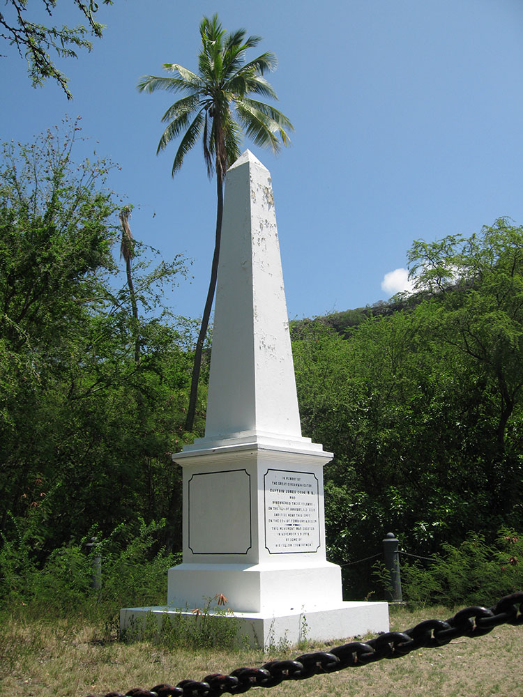
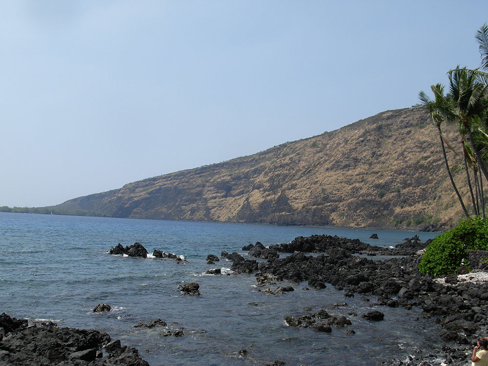
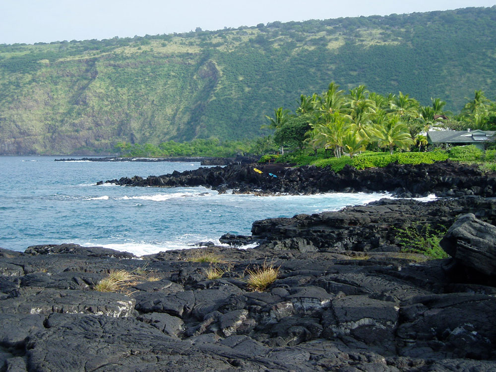
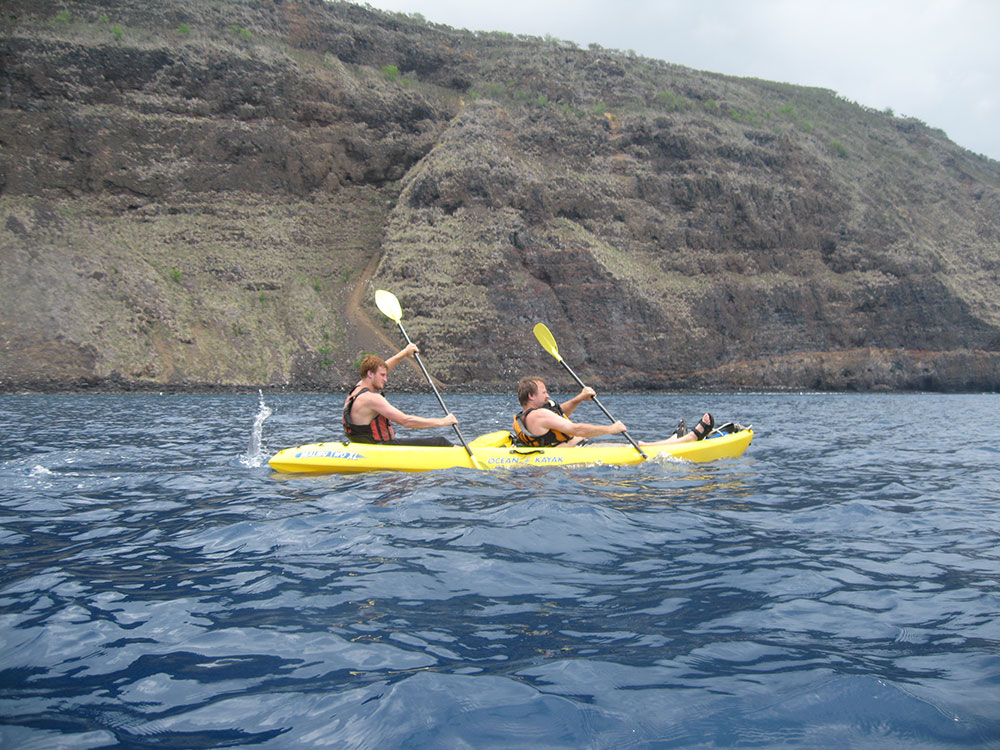

_(23299175513).jpg){kind=link}
Marine life conservation district and historic landing site featuring coral reefs, spinner dolphins, and the Captain Cook Monument.
General Information
Permits required for kayaking or vessel access
How to Get There
From Kona (13 mi): Drive south on Highway 11, turn right onto Nāpōʻopoʻo Road, and follow signs to the state historical park and bay access.
Overview
Kealakekua Bay, a state historical park and marine life conservation district on the Kona coast, is one of the Big Island's most beautiful and historic places. It is the site where Captain James Cook, the first European to arrive in Hawaiʻi, was killed in 1779 during a conflict with Native Hawaiians, and a white obelisk memorial on the northern shore marks the spot. The bay is also a sacred cultural landscape, with ancient villages and Hikiau Heiau, and its clear water and coral reefs make it among the finest snorkeling and kayaking places in the state. Visitors come for the history, the sea life, including spinner dolphins, and the dramatic cliffs of Pali Kapu o Keōua.
Access
The bay is reached from Highway 11 by taking Nāpōʻopoʻo Road down the hill to the small village of Nāpōʻopoʻo on the southern shore, about 13 miles south of Kailua-Kona. A narrow, winding road leads to the wharf and the parking area, which can be crowded. The Captain Cook Monument across the bay is accessible only by boat or kayak with the proper permits, or by a steep hike on the Kaʻawaloa Trail. Most visitors drive to Nāpōʻopoʻo and either snorkel with a tour boat, kayak with a permitted operator or walk the shoreline.
Seasons
The bay is open year-round, but ocean conditions vary. Summer is generally calm and clear, ideal for snorkeling and kayaking, while winter can bring swell and rough conditions that limit water activities. Mornings are the best time to visit, with calmer water, fewer boats and a chance to see spinner dolphins. The hike to the monument is hot and exposed, so start early, and note that permits are required for kayaking and vessel access, with limited commercial operators allowed.
Things to Do
Visit a Sacred and Historic Bay
Kealakekua Bay State Historical Park and the marine life conservation district protect a place of great importance to Native Hawaiians. Ancient village sites and heiau line the shore, and the cliffs rise steeply behind the bay.
Snorkel at the Captain Cook Monument
The waters near the monument are known for coral, fish and clear visibility. Access is by boat, by kayak with permits or by a long hike, so many visitors join an authorized tour.
Kayak the Bay
Kayaking across the bay is a classic Big Island experience, though a state permit and authorized operator are required for most paddlers. The paddle takes about an hour each way, and calm mornings are best.
See Hikiau Heiau
At Nāpōʻopoʻo, Hikiau Heiau is a restored temple associated with the arrival of Cook and with Hawaiian ceremonies. It is an easy stop near the wharf with interpretive signs.
Look for Dolphins and Sea Life
Spinner dolphins often visit the bay in the morning, and sea turtles and tropical fish are common. Visitors should keep a respectful distance from wildlife.
Top Trails
Kaʻawaloa Trail to the Captain Cook Monument
Length: Approximately 3.8 miles round trip
Elevation Gain: Approximately 1,300 feet
Difficulty: Strenuous
This steep, hot and rocky trail descends to the monument at the shore and climbs back out. It has little shade and the return is tough, so start early and bring plenty of water.
Hikiau Heiau and Nāpōʻopoʻo Shoreline Walk
Length: Less than 0.5 miles round trip
Elevation Gain: Minimal
Difficulty: Easy
A short stroll around the wharf area leads to Hikiau Heiau and the rocky shore. It is a quick and easy way to experience the history and see the bay.
Visitor Centers
Kealakekua Bay does not have a visitor center. Signs and information boards at Nāpōʻopoʻo explain the history of the heiau and the bay, and the Hawaiʻi State Parks website provides information about permits, rules and conditions. Local tour operators and the visitor resources in Kailua-Kona and Captain Cook can help with snorkel tours, kayak permits and safety tips.
Camping and Lodging
There is no lodging or developed camping at the bay itself. In nearby Captain Cook and Kealakekua, small inns, bed-and-breakfasts and vacation rentals sit among the coffee farms, and the county's Hoʻokena Beach Park, about 15 minutes south, offers camping with a permit. Kailua-Kona, about 25 minutes north, has hotels such as the Royal Kona Resort, Kona Seaside Hotel and Sheraton Kona Resort and Spa, and Keauhou has the Outrigger Kona Resort and Spa. Resorts along the Kohala Coast are about an hour and a half north. Check each property's website for current availability.
This article uses material from the Wikipedia article and official pages for Hawaii State Parks: Kealakekua Bay State Historical Park, released under the Creative Commons Attribution-Share-Alike License 3.0.



.jpg){kind=link}


